Stephany Nusch
Software Engineer
contact@stebs.dev
about me
Hello, there. My name is Stephany (she/her), and I am a Brazilian Software Engineer, more specifically located in the city of São Paulo. I graduated in the first semester of 2016 at FATEC Rubens Lara and have been collecting professional experience since then.
I am passionate about coding and am always studying to learn something new and find ways to improve my skills. My goal is to broaden my possibilities as a professional and to challenge myself to look for the smartest solutions. I love learning and am widely open to every opportunity to evolve technically and personally.
Diversity and inclusion are topics that hold my interest, and I value initiatives to decrease the current inequality in tech.
